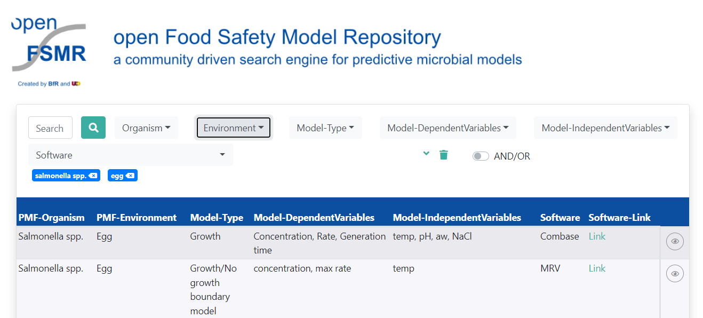

7 Process model
Process model describes how the concentrations of the hazard change along the different modules of the food production chain (potentially from farm to fork). The module definition comes from the Modular Process Risk Model methodology developed by Nauta (2001). Each module is defined to reflect one of the six basic process: growth, inactivation, mixing, partitioning, removal and cross-contamination . A module may combine several processing steps if they have a similar impact on the microorganism.
7.1 Predictive microbiology models (growth and inactivation)
PM models are used for describe the microbial responses towards environmental conditions, such as storage and processing conditions and product characteristics. Traditionally, models in predictive microbiology are classified as primary and secondary models. Numerous models have been developed (Tenenhaus-Aziza and Ellouze 2015). Some tertiary tools provide secondary models to predict the behavior of various pathogens in various conditions (e.g. ComBase Predictive Models, Food Spoilage and Safety Predictor, SymPrevius, GroPIN Modelling DataBase,…).
In order to identify the list of existing models, Food risk labs website maintain an exhaustive list of predictive models: FoodRisk-Labs.
A search engine is available to retrieve predictive microbiology models (Figure 7.1)
